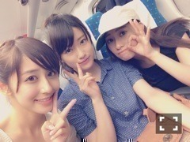

| 2014/08 18 Mon | 斎藤ちはる 怒涛の質問返し1〜50 編！そして大阪好き やで！(´>∀<｀)ゝ |
ちはるーむへようこそ(﹡ˆ ˆ﹡)
昨日は大阪で、真夏の全国ツアー初日！！
楽しかった！(﹡ˆ ˆ﹡)
反省点を見直して、全国ツアー、いいものを作っていきたい。がんばります！
夜公演ではひめたんと共に
MCさせていただく場面があったんですが
緊張してしまいたどたどしくなってしまった。。
すみません(°_°)(°_°)
楽屋でひめたんと練習してるときも
隣にいた愛未と、ずーさんがずっと応援してくれてたよヽ(；；)丿笑
ちーちゃんのMCが不安だから見守っておくねってお母さんのような暖かい顔をしてくれてましたヽ(；；)丿
そしてひめたんには色々助けてもらいましたありがとうヽ(；；)丿♡
もっとトーク力を高めて、みんなを安心させられるようなMCをお聞かせしたいと思いますﾟﾟ\(´O`/)°゜ﾟがんばる！
そしてそして！
びっくりするくらいたくさんの質問ありがとうございましたヽ(；；)丿
質問は、このブログが更新された時間までで
締め切らせていただきます！
このブログのコメントの質問には答えられないことにします(°_°)勝手でごめんなさい(°_°)
そして！
質問してくれたものには！！
全ての方にお答えしたいと思います！！！
まずはコメント1〜50までにコメントしてくださった方！
(何度も確認したつもりですが
万が一なかったらお申し付けくださいませ。)
質問してくださった方以外も読んでくれたらうれしいな(﹡ˆ ˆ﹡)
☆
コメント番号
質問
解答
☆
という形になってます！
50
ちはるんが乃木坂に入ったきっかけを聞きたい！
昔から芸能界に興味があって、丁度良いタイミングでオーディションがあったからチャレンジしてみました！
中3の受験と被って大変だった思い出があるよﾟﾟ\(´O`/)°゜ﾟ
48
いろんな乃木坂メンバーとかにも聞いたんだけどさ、好きなポケモンは何〜？
ポッチャマ！
まるい！かわいい！
47
昔は南流石さんでしたが現在乃木坂の曲の振り付けはどなたがおこなってますか？
楽曲によって色々な先生が振り付けしてくれてるんだ♪
46
Q.斎藤さんにとって、どんな剥がしスタッフだと握手会がやりやすいですか。
ハキハキしてて真面目な人がいいですね！
45
★乃木坂の中で一番好きな曲って何？
おっおーおっおおおっおー
狼にー口笛をー
★自分の体の部分で一番自信のあるパーツってどこ？
目です！普通ですが！ごめんよ！
44
堀ちゃんとはなにはなすのー？
堀ちゃんはねー、なんかうちらが変なことしてるのを遠くから見てくすくす笑っててくれる！
今度深いお話したら教えるね〜♪
42
ちーさまっていうのがいいやすいんだけどちーさまでもいいカナ？
ちーさまなんて！なんかご利益があればいいんですけどね(ω)
41
ツインテール可愛いいいいいいいい！！！！
うおお！ありがたい！見つけた！少数派！
40
斎藤家の歌のCD化はいつですか？かなり好きです。
そうだねー。まだかまだかと待ってるんだけどねー。お話こないねー。
今の目標と、最終的になりたいものはなんですか？
今の目標はピンでのお仕事が沢山出来るようになりたい！
最終的には女優さんになりたい！
演技のお仕事がしたい！
演技がしたい！！！！
39
よく買いに行く服屋とかある？？
すきなブランドな服とか
dazzlin
titiy&co
EMODA
3rd by
38
岡山を想像して思い浮かぶことはなんですかー？
きびだんごかな！
もーもたろさんももたろさん
37
僕は最近お風呂上がりに豆乳をよく飲むのですが、ちーちゃんは豆乳好きですか？
豆乳好きだよー♡
バナナ味と紅茶味は一時期1日に一本ずつ飲んでたかもー♡笑
36
質問なんだけど私、ちはるんと同い年の女子なんだけど握手会行っても大丈夫かな？
同い年の女の子！！♡
親近感！！うれしい！！待ってる！！
35
身長を伸ばす方法ってありますか？
私は小学生まで9時までには必ず寝てました。
とりあえず睡眠とストレスフリー。
34
メイク道具はどんなのをつかってますか？？♡
今度写真アップするねー♡
36
ちはるんってまだ身長のびてるん？
ちょっと最後ちはるん？と掛けたよね？だよね？
伸びてません！
伸びてないけど
乃木坂1の、のっぽさん♪(←これ言うとみんなに笑われるのなぜ。)
32
ちはるんは休みの日はインドア派？アウトドア派？
アウトドア派！
家族ででかけるのが好き〜♡
31
まだ妹にジャイアン発揮してますか∩^ω^∩？
握手会でやってくれる可能性は何%ですか♡？？
ハーフツインのちはるちゃんに会いたいです♡
してないよ！ジャイアンしてたらそんなの妹がジャイ子じゃんね！
ハーフツインかーハーフツインねー
ひめたんみたいに似合えばいいのだけど( ´ｰ`)きびぃ
30
調子どうすか？
いいっすよ！君はどうだい？
29
メンバーの中で姉or妹にしたい人は誰ですか？
姉・らりん
妹・ひなちま
2人ともしっかりしてるから支えてもらいたいヽ(；；)丿笑
28
壁ドンされたいー？
若月ちゃんに
一番好きな曲は？
乃木坂で
身長大きいからそーゆーのされてみたいけど(°_°)笑
むしろする方が図が映えます。
好きなのは狼に口笛を！！
27
ちはるちゃんは日村さん派ですか設楽さん派ですか？
どっちも派です♡
26
他にもなんかないの〜？
の歌の名前って斎藤家のうただっけ？？
ちーちゃん、みんな、み、みんな♪てをつなごおよ♪
作曲のぱぱが絶賛考え中です！！
25
どういうアクセサリーに目がいきますか？？♡
私アクセサリーショップで働いてるのですが、ちはるんはアクセサリー好きですか？？♡
華奢なアクセサリーも好きだし
ファッションによっては大ぶりのも好き！！
アクセサリーだいすき♡
よく買い物行っていっぱい買っちゃうﾟﾟ\(´O`/)°゜ﾟ
24
ちはるちゃんが出演してみたいテレビ番組を教えてください。
世界ふしぎ発見！(考古学好きとしてはたまらない)
あとはドラマですかね！
23
斉藤優里ちゃんに好きって言ってもいつも嫌いって言われます(泣)どうしたらいいですか？
諦めたらそこで試合終了ですよ
22
ちはるのことをるんと呼んでるのですが他の呼び方のほうがいいですか？それともこの呼び方を広めた方がいいですか？
呼びやすい呼び方でいいよ〜♪
ありがとね♪
21
今度の全国握手会でよかったらツインテールやっほしい！９月20日
またいた！少数派！！
考えておきますﾟﾟ\(´O`/)°゜ﾟ笑
20
ちーちゃんは、スタイルを保つためになにかしてますか?
炭水化物は意識的に少なめに！
あと、フルーツとかサラダは多めに食べる！
基本的な事をしてます∠( ˙-˙ )／
19
ちーちゃんは、やってみたい楽器はありますか？？
ドラムとギターかなっ！
自分がそんなのできたらかっこいいじゃんね〜憧れるわ〜
18
東京で好きな場所はどこ？
ちはるの乃木坂の推しメンは誰ですか？
あとその人の面白かわいいエピソード教えてください！
元祖東京タワー！
ねね♡まいまい♡ななみ
いっぱいありすぎてかききれませーんﾟﾟ\(´O`/)°゜ﾟ
17
ちはるんは釣りに行ったことある？
ないの！行きたい！
16
サイリウムのいろはなにがいー？
あと握手会で無茶ぶり答えてくれるかな？
生まれたままでのちはるの将来の夢、素敵な...のあとなんて書いてあるの？
サイリウムは、赤と青で統一したいと思います！！
見つけたら速攻でレス送る♡
無茶ぶり。。頑張る！笑
素敵な大人になる！！！
だよ♡
15
音楽聴く派ですか？聴かない派ですか？
また勉強するとき、
長続きする秘訣があったら教えてください！
受験勉強に、明け暮れているのですが、
同い年の高3です！
音楽めっちゃ聞く派！
イヤホンないと無理派！
勉強のとき、集中できないなって思ったら
潔く諦めてちょっと休憩する！
それかもう寝ちゃって、朝早く起きる！
一夜漬けが多かったテストだったけど
この方法で学年順位一桁はキープできたよ(﹡ˆ ˆ﹡)
14
なんでそんな可愛いのか教えてくださいっ！！笑笑
なによっ！かわいくないよっ！笑
でもうれしいﾟﾟ\(´O`/)°゜ﾟ
13
握手会なにしたら覚えてくれる？
洋服とか人と少し違ったら覚える！
あとはニックネーム名札とか！
1番はいっぱい来てくれること♡
12
お父さんギター上手くなった？？
ぱぱねえ。、相変わらず。
触れないであげて。、笑
11
ちはるはよくモデルの山本美月さんに似てるって言われたりしない？？
最近よく言われるﾟﾟ\(´O`/)°゜ﾟ♡♡
すごい嬉しい(´๑•_•๑`)
だけど私なんかがおこがましい。。
10
ちーちゃんは普段どんな服きてる？
シンプル イズ ザ ベスト！！！
9
乃木坂に入ってよかったって思ったときはどんなとき？
ライブや握手会でファンの方の笑顔がみれたとき♡
8
好きな映画はー？
ハイスクールミュージカルのシリーズ
バックトゥーザフューチャー
ディズニー映画
ハリーポッター
外国の映画が好きですね！
7
ちはるの必殺技はなんですか？
絶賛考え中(｢･ω･)｢ぶーん
6
新曲を漢字一文字で表すと？
空！
透き通った、乃木坂らしい楽曲です♡
5
好きなアーティストは？
BUMP OF CHICKENさん
back numberさん
flumpoolさん
清水翔太さん
2
今まで一番ハッピーだったことは？
乃木坂のオーディションに受かったこと♡
1
ちはるんは海行くの？(´｡✪ω✪｡｀)
海いきたいけど毎年行けないの。。
今年も無理そうかなﾟﾟ\(´O`/)°゜ﾟ。。
終わり！！
読んでくれてありがとう♡
見にくくなりそうな予感がするぞ。。
そうなったら次回から改善策を考えます
！！

ライブ後のわたしたち♡
前髪われてます。えへ
ばいるんっ
るんるんっ
ちはるんっ
(´>∀<｀)ゝ